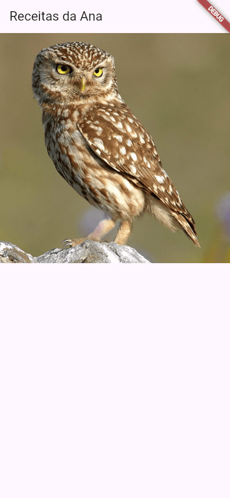
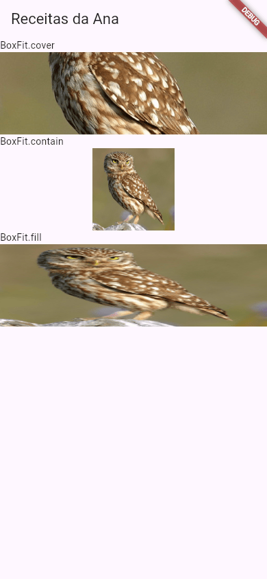
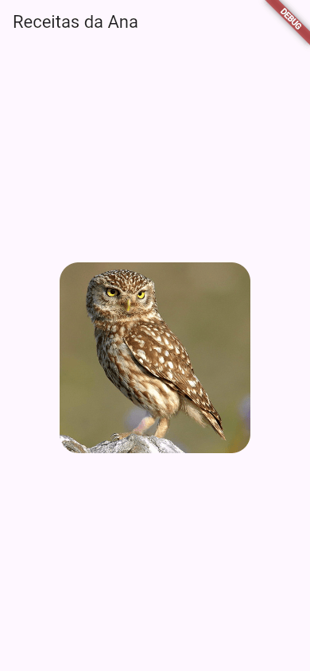
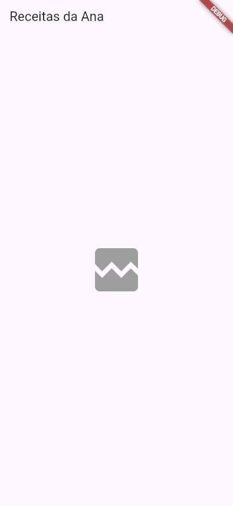
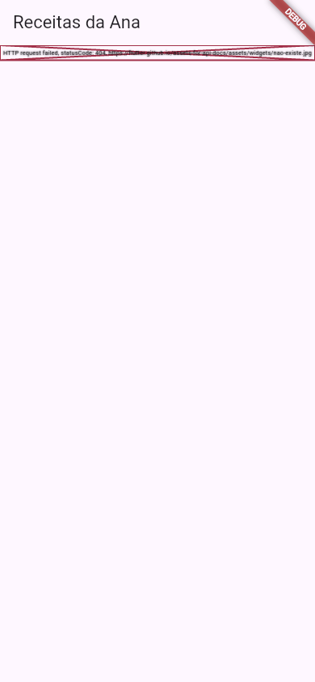
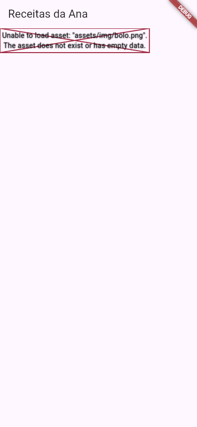

Flutter Image: imagens
Um app de receitas sem foto do bolo não dá água na boca. Uma lojinha sem foto do produto não vende. No Flutter, toda imagem na tela é um widget Image, e ele tem dois jeitos principais de achar a imagem: buscar na internet (Image.network) ou pegar um arquivo que viaja dentro do app (Image.asset).
- A mostrar uma imagem da internet com
Image.network. - A controlar o tamanho (
width,height) e o encaixe (fit). - A arredondar os cantos com
ClipRRect. - O que mostrar enquanto a imagem carrega e quando ela falha.
- A pôr uma imagem dentro do app com
Image.assete opubspec.yaml. - Os erros reais: endereço quebrado e imagem não declarada no
pubspec.yaml.
Todos os apps desta aula foram compilados com o Flutter 3.47.7 do laboratório e fotografados numa tela do tamanho de um celular. A foto de exemplo é a coruja que a própria documentação oficial do Flutter usa nos exemplos de Image (do repositório flutter/assets-for-api-docs, licença BSD, a mesma do Flutter): um endereço estável, que o leitor também consegue abrir.
A ideia: o porta-retratos
Um porta-retratos tem um tamanho; a foto que você põe nele tem outro. Ou você corta a foto para encher a moldura, ou deixa sobrar espaço em volta, ou estica a foto (e a tia fica achatada). O Image é o porta-retratos, e o parâmetro fit é a decisão de como a foto entra nele.
1. Uma imagem da internet: Image.network
import 'package:flutter/material.dart';
void main() {
runApp(const MeuApp());
}
class MeuApp extends StatelessWidget {
const MeuApp({super.key});
@override
Widget build(BuildContext context) {
return MaterialApp(
home: Scaffold(
appBar: AppBar(title: const Text('Receitas da Ana')),
body: Image.network(
'https://flutter.github.io/assets-for-api-docs/assets/widgets/owl.jpg',
),
),
);
}
}
- Image.network( ... )
- "Imagem da rede": baixa a imagem do endereço e a mostra. Repare que é
Image.network, um construtor com nome da classeImage(você viu construtores com nome no Dart). - 'https://...'
- O endereço (URL) da imagem. Tem de ser o endereço do arquivo da imagem (que termina em
.png,.jpg,.webp...), e não de uma página que mostra a imagem. - sem const
Image.networknão pode serconst: o construtor não éconst, porque monta por dentro, com o app rodando, o "buscador" da imagem (umNetworkImage).

Image.network sem tamanho: a foto ocupa a largura da tela, na proporção dela.2. Tamanho e encaixe: width, height e fit
A Ana ainda não fotografou o bolo, então ensaia com a coruja: quer a foto como uma faixa no topo da receita, com a largura da tela toda e pouca altura. Mas a foto não tem esse formato. Como ela entra numa moldura comprida? O fit decide:
body: ListView(
children: [
const Text('BoxFit.cover'),
Image.network(endereco, width: 390, height: 120, fit: BoxFit.cover),
const Text('BoxFit.contain'),
Image.network(endereco, width: 390, height: 120, fit: BoxFit.contain),
const Text('BoxFit.fill'),
Image.network(endereco, width: 390, height: 120, fit: BoxFit.fill),
],
),
- width: 390, height: 120
- O tamanho da moldura, em pontos lógicos.
- fit: BoxFit.cover
- "Cobrir": a foto aumenta até encher a moldura toda, mantendo a proporção; o que sobra é cortado. É o mais usado para fotos de capa.
- fit: BoxFit.contain
- "Conter": a foto inteira cabe na moldura, mantendo a proporção; sobra espaço vazio dos lados.
- fit: BoxFit.fill
- "Preencher": estica a foto para o tamanho exato da moldura, sem manter a proporção. A foto fica deformada.
- ListView
- Uma lista que rola (aula ListView); entrou aqui para caber tudo. O
enderecoé uma variável com o mesmo endereço da seção 1.

fit muda.Missão: a foto da coruja está deformada. Faça a faixa ter 200 de altura e use o fit que enche a moldura sem deformar a foto.
import 'package:flutter/material.dart';
void main() {
runApp(const MeuApp());
}
class MeuApp extends StatelessWidget {
const MeuApp({super.key});
@override
Widget build(BuildContext context) {
return MaterialApp(
home: Scaffold(
appBar: AppBar(title: const Text('Receitas da Ana')),
body: Image.network(
'https://flutter.github.io/assets-for-api-docs/assets/widgets/owl.jpg',
width: double.infinity,
height: 100,
fit: BoxFit.fill,
),
),
);
}
}
import 'package:flutter/material.dart';
void main() {
runApp(const MeuApp());
}
class MeuApp extends StatelessWidget {
const MeuApp({super.key});
@override
Widget build(BuildContext context) {
return MaterialApp(
home: Scaffold(
appBar: AppBar(title: const Text('Receitas da Ana')),
body: Image.network(
'https://flutter.github.io/assets-for-api-docs/assets/widgets/owl.jpg',
width: double.infinity,
height: 200,
fit: BoxFit.cover,
),
),
);
}
}
O width: double.infinity da missão quer dizer "a largura toda que houver": é o jeito de pedir a largura da tela sem saber quantos pontos ela tem.
3. Cantos arredondados: ClipRRect
body: Center(
child: ClipRRect(
borderRadius: BorderRadius.circular(24),
child: Image.network(
'https://flutter.github.io/assets-for-api-docs/assets/widgets/owl.jpg',
width: 240,
height: 240,
fit: BoxFit.cover,
),
),
),
- ClipRRect
- "Recorte retangular arredondado" (o
RRecté rounded rectangle). Ele recorta o filho com cantos arredondados, como uma tesoura de picotar cantos. - borderRadius: BorderRadius.circular(24)
- O raio dos cantos: 24 pontos em todos. Quanto maior, mais redondo.

ClipRRect com raio 24.Para uma foto redonda (a de perfil, por exemplo), troque o ClipRRect por ClipOval, ou use o CircleAvatar, que você vai ver no Projeto: Cartão de Perfil.
4. Enquanto carrega e quando falha
Imagem da internet demora um pouco, e às vezes não vem (sem internet, endereço errado). Por padrão, o Image.network mostra nada enquanto carrega. Dá para mostrar uma rodinha de "carregando" e, se falhar, um ícone no lugar:
body: Center(
child: Image.network(
'https://flutter.github.io/assets-for-api-docs/assets/widgets/nao-existe.jpg',
width: 240,
height: 240,
loadingBuilder: (context, child, progresso) {
if (progresso == null) return child;
return const CircularProgressIndicator();
},
errorBuilder: (context, erro, pilha) {
return const Icon(Icons.broken_image, size: 96, color: Colors.grey);
},
),
),
- loadingBuilder: (context, child, progresso) { ... }
- Uma função que o Flutter chama enquanto baixa. Quando
progressoénull, a imagem já chegou: devolva ochild(a própria imagem). Senão, devolva o que mostrar enquanto isso: aqui, a rodinhaCircularProgressIndicator. - errorBuilder: (context, erro, pilha) { ... }
- Uma função que o Flutter chama se der erro. Devolve o widget que fica no lugar da imagem: aqui, o ícone de imagem quebrada.
- nao-existe.jpg
- Um endereço que não existe, de propósito, para ver o
errorBuilderem ação.

errorBuilder pôs o ícone no lugar da foto.5. A imagem dentro do app: Image.asset
O logotipo da lojinha, um ícone próprio, a foto da tela de boas-vindas: imagens que sempre estão no app não deveriam depender da internet. Elas viajam dentro do app como assets ("recursos"). São três passos:
- Ponha o arquivo numa pasta do projeto, por exemplo
assets/img/bolo.png(ao lado da pastalib). - Avise o Flutter no
pubspec.yaml, na seçãoflutter::flutter: uses-material-design: true assets: - assets/img/bolo.png(Ou- assets/img/, com a barra no fim, para todos os arquivos da pasta.) A indentação importa:assets:fica dois espaços para dentro deflutter:. - Use no código, com o mesmo caminho:
body: Image.asset('assets/img/bolo.png'),
Depois de mexer no pubspec.yaml, pare o app e rode de novo (flutter run): a recarga a quente não pega assets novos. A aula Assets conta tudo, inclusive imagens em várias resoluções. Os parâmetros width, height e fit funcionam igual aos do Image.network.
Image.network
As caixas "Experimente" rodam no DartPad, que tem um arquivo só (o main.dart), sem pubspec.yaml nem pasta de assets. Por isso as missões desta aula usam Image.network. Para testar o Image.asset, use um projeto seu (aula Criando um Projeto).
Formas diferentes de mostrar uma imagem
| Forma | Quando usar |
|---|---|
Image.network(url) | Imagens que mudam ou que são muitas: fotos de produtos, de receitas vindas de um servidor. |
Image.asset('assets/...') | Imagens fixas, que o app sempre tem: logotipo, ilustrações. Funcionam sem internet, mas aumentam o tamanho do app. |
Icon(Icons.cake) | Símbolos simples: são mais leves e mudam de cor com o tema (aula Ícones). |
Image.file(...) / Image.memory(...) | Uma foto que o usuário tirou com a câmera, ou bytes que chegaram de outro lugar (aula Recursos do Aparelho). |
Quando dá errado
errorBuilder
body: Image.network(
'https://flutter.github.io/assets-for-api-docs/assets/widgets/nao-existe.jpg',
),

Image.network com endereço quebrado e sem errorBuilder.No modo debug, no lugar da imagem aparece um retângulo de borda vermelha com um X, e a mensagem espremida dentro dele. No console:
Failed to load resource: the server responded with a status of 404 () ══╡ EXCEPTION CAUGHT BY IMAGE RESOURCE SERVICE ╞════════════════════════════════════════════════════ The following NetworkImageLoadException was thrown resolving an image stream completer: HTTP request failed, statusCode: 404, https://flutter.github.io/assets-for-api-docs/assets/widgets/nao-existe.jpg … ════════════════════════════════════════════════════════════════════════════════════════════════════
- EXCEPTION CAUGHT BY IMAGE RESOURCE SERVICE
- Quem reclamou foi o serviço que busca imagens.
- NetworkImageLoadException
- "Falha ao carregar uma imagem da rede".
- HTTP request failed, statusCode: 404,
- O servidor respondeu 404, o famoso "não encontrado": o endereço está errado ou a imagem foi apagada. Outros números comuns:
403(proibido) e, sem internet, um erro de conexão.
O app não quebra: o resto da tela continua funcionando. Mas o usuário vê um buraco. Como consertar: confira o endereço (abra-o no navegador: tem de aparecer só a imagem) e use sempre um errorBuilder (seção 4) em imagens da internet, porque um dia a rede falha.
Image.asset sem declarar no pubspec.yaml
body: Image.asset('assets/img/bolo.png'),

Image.asset sem o arquivo declarado: o retângulo de erro do modo debug.O código compila (o compilador não confere se o arquivo existe), e o erro aparece com o app rodando:
══╡ EXCEPTION CAUGHT BY IMAGE RESOURCE SERVICE ╞════════════════════════════════════════════════════ The following assertion was thrown resolving an image codec: Unable to load asset: "assets/img/bolo.png". The asset does not exist or has empty data. … Image provider: AssetImage(bundle: null, name: "assets/img/bolo.png") … ════════════════════════════════════════════════════════════════════════════════════════════════════
- Unable to load asset: "assets/img/bolo.png".
- "Não consegui carregar o asset". O Flutter só põe dentro do app os arquivos listados no
pubspec.yaml; este não estava lá (no lab, nem o arquivo existia). - The asset does not exist or has empty data.
- "O asset não existe ou está vazio".
- Image provider: AssetImage(... name: "assets/img/bolo.png")
- Qual imagem deu problema: confira se o caminho é exatamente o mesmo do
pubspec.yaml, letra por letra (maiúsculas contam).
Como consertar: confira as três coisas, nesta ordem: o arquivo está mesmo nessa pasta do projeto? Ele está listado em flutter: assets: no pubspec.yaml, com a indentação certa? Você parou o app e rodou de novo depois de mexer no pubspec.yaml?
Referência rápida
| Escrita | O que faz |
|---|---|
Image.network('https://...') | Imagem da internet |
Image.asset('assets/img/x.png') | Imagem do app (declarada no pubspec.yaml) |
width: / height: | Tamanho da moldura; double.infinity = tudo o que houver |
fit: BoxFit.cover | Enche a moldura, corta o que sobra |
fit: BoxFit.contain | A imagem inteira, sobra espaço |
fit: BoxFit.fill | Estica, deforma |
ClipRRect(borderRadius: BorderRadius.circular(16), child: ...) | Cantos arredondados |
loadingBuilder / errorBuilder | O que mostrar carregando / se falhar |
Exercícios
1. Da internet
Complete o construtor da imagem da internet:
2. Encher sem deformar
Complete o fit que enche a moldura mantendo a proporção:
3. Cantos redondos
Qual widget recorta a imagem com cantos arredondados?
4. A Ana pôs o logotipo em assets/logo.png e usou Image.asset('assets/logo.png'), mas deu erro. O que provavelmente faltou?
5. Com BoxFit.fill, uma foto quadrada numa moldura comprida fica...
Missão final: a capa da receita
Missão: deixe a foto da coruja com cantos arredondados de raio 16 (ClipRRect), com BoxFit.cover, e com um errorBuilder que mostre o ícone Icons.broken_image se a foto não carregar.
import 'package:flutter/material.dart';
void main() {
runApp(const MeuApp());
}
class MeuApp extends StatelessWidget {
const MeuApp({super.key});
@override
Widget build(BuildContext context) {
return MaterialApp(
home: Scaffold(
appBar: AppBar(title: const Text('Bolo de cenoura')),
body: Center(
child: Image.network(
'https://flutter.github.io/assets-for-api-docs/assets/widgets/owl.jpg',
width: 300,
height: 200,
),
),
),
);
}
}
import 'package:flutter/material.dart';
void main() {
runApp(const MeuApp());
}
class MeuApp extends StatelessWidget {
const MeuApp({super.key});
@override
Widget build(BuildContext context) {
return MaterialApp(
home: Scaffold(
appBar: AppBar(title: const Text('Bolo de cenoura')),
body: Center(
child: ClipRRect(
borderRadius: BorderRadius.circular(16),
child: Image.network(
'https://flutter.github.io/assets-for-api-docs/assets/widgets/owl.jpg',
width: 300,
height: 200,
fit: BoxFit.cover,
errorBuilder: (context, erro, pilha) {
return const Icon(Icons.broken_image, size: 96);
},
),
),
),
),
);
}
}
Resumo
Image.network(url)mostra uma imagem da internet;Image.asset(caminho), uma imagem que vai dentro do app.Image.assetexige o arquivo declarado nopubspec.yaml(flutter: assets:) e umflutter runnovo.widtheheightdão o tamanho da moldura;fitdecide o encaixe:cover(enche e corta),contain(inteira),fill(deforma).ClipRRectarredonda os cantos.loadingBuildereerrorBuildercuidam do "carregando" e da falha.